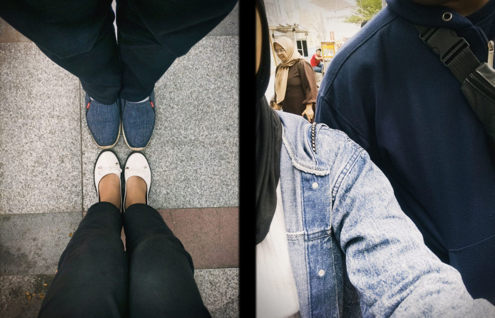

Bagi dunia, Bandung adalah ibu kota kreativitas, sebuah kota legendaris di bentang Wonderful West Java yang dibalut keindahan arsitektur kolonial, gemerlap lampu malam yang estetik, dan hawa sejuk yang selalu sukses merayu siapa saja untuk datang berkunjung. Bandung adalah Paris van Java, kota romantis yang konon diciptakan saat Tuhan sedang tersenyum. Namun, bagi saya dan dia, Bandung memiliki kedudukan yang jauh lebih sakral dan bersejarah. Di atas tanah berjuluk Kota Kembang inilah, sebuah batu pijakan besar dalam hubungan kami resmi diletakkan. Bandung adalah saksi dari petualangan pertama kami, perjalanan terjauh yang pernah kami tempuh berdua demi merayakan sebuah rasa yang bernama cinta. Saya tidak akan pernah lupa bagaimana rasanya hari itu. Membawa ia pergi jauh meninggalkan rutinitas, berkendara melintasi batas kota, menembus jalanan yang menanjak menuju jantung Jawa Barat. Itu adalah kali pertama kami berani melangkah sejauh ini. Sepanjang perjalanan, di antara deru mesin dan obrolan-obrolan hangat yang tak ada habisnya, ada rasa haru sekaligus bahagia yang membuncah di dada. Menatap wajahnya di sebelah saya, melihat bagaimana ia menikmati pemandangan hijau yang perlahan berganti menjadi deretan bukit khas Paris van Java, membuat jarak ratusan kilometer yang kami tempuh sore itu terasa begitu singkat. Perjalanan jauh itu tidak lagi terasa melelahkan, karena setiap detiknya adalah waktu terbaik untuk saling mengenal lebih dalam lagi. Ketika malam mulai turun dan dinginnya Bandung mulai menusuk kulit, kota ini seolah berubah menjadi panggung romansa milik kami berdua. Berjalan beriringan di bawah temaram lampu kota, menyusuri jalanan legendaris yang syahdu, hingga menikmati kehangatan kuliner malamnya adalah fragmen-fragmen memori yang sangat manis. Bandung yang terkenal romantis ala Dilan seakan meminjamkan seluruh atmosfer puitisnya malam itu khusus untuk kami. Dinginnya udara malam tidak menjadi penghalang, melainkan alasan paling manis bagi kami untuk saling menjaga agar tetap dekat dan hangat. Di kota ini, di titik terjauh dari rumah yang pernah kami singgahi bersama, kami sadar bahwa rumah sejati sebenarnya bukan lagi berupa tempat, melainkan ada pada diri satu sama lain. Bandung telah mengajari kami bahwa cinta sejati selalu berani melangkah jauh, menembus batas kenyamanan demi mengukir cerita baru. Kota ini mengunci kenangan perjalanan perdana kami dalam balutan kabutnya yang indah dan kerlap-kerlip lampunya yang menawan. Ini adalah Bandung versi kami—bukan sekadar destinasi liburan di peta wisata, melainkan lambang dari keberanian kami untuk melangkah jauh bersama, sebuah memori Wonderful yang akan selalu menjadi cerita perjalanan paling berharga yang pernah kami ukir di Jawa Barat.